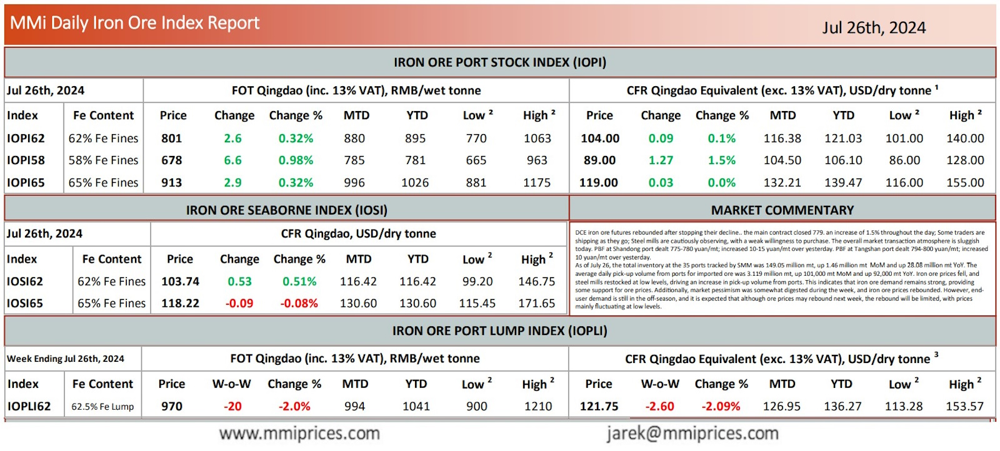

DCE iron ore futures rebounded aŌer stopping their decline.. the main contract closed 779. an increase of 1.5% throughout the day;Some traders are shipping as they go; Steel mills are cautiously observing, with a weak willingness to purchase. The overall market transaction atmosphere is sluggish today. PBF at Shandong port dealt 775-780 yuan/mt; increased 10-15 yuan/mt over yesterday. PBF at Tangshan port dealt 794-800 yuan/mt; increased 10 yuan/mt over yesterday. As of July 26, the total inventory at the 35 ports tracked by SMM was 149.05 million mt, up 1.46 million mt MoM and up 28.08 million mt YoY. The average daily pick-up volume from ports for imported ore was 3.119 million mt, up 101,000 mt MoM and up 92,000 mt YoY. Iron ore prices fell, and steel mills restocked at low levels, driving an increase in pick-up volume from ports. This indicates that iron ore demand remains strong, providing some support for ore prices. Additionally, market pessimism was somewhat digested during the week, and iron ore prices rebounded. However, enduser demand is still in the off-season, and it is expected that although ore prices may rebound next week, the rebound will be limited, with prices mainly fluctuating at low levels.

Download PDFSource: Metals Market Index (MMi)